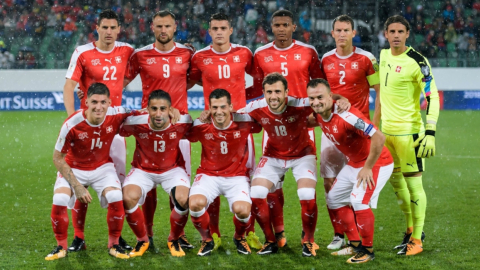

Suiza 🇨🇭
Sin títulos📍 Sede / Ciudad: Zúrich (Letzigrund Stadium) / Basilea (St. Jakob-Park)

🇨🇭 Selección de Suiza en la Copa del Mundo
Suiza es una selección con amplia tradición mundialista. Aunque nunca ha conquistado el título, ha sido protagonista en numerosas ediciones destacándose por su disciplina táctica y solidez defensiva.
Participaciones (13)
1934, 1938, 1950, 1954, 1962, 1966, 1994, 2006, 2010, 2014, 2018, 2022, 2026.
Estadísticas Mundiales
19 Victorias | 8 Empates | 20 Derrotas
⭐ Mejor resultado: Cuartos de final
Clasificación al Mundial 2026
Suiza obtuvo su clasificación mediante las Eliminatorias de la UEFA, manteniéndose como una de las selecciones más competitivas del continente europeo.
Historia en la Copa
Desde su debut en 1934, Suiza ha participado regularmente en la Copa del Mundo. En varias ocasiones alcanzó los cuartos de final y es reconocida por formar equipos muy ordenados y difíciles de vencer.
💡 Curiosidad
Suiza organizó la Copa Mundial de la FIFA de 1954, torneo en el que Alemania Federal consiguió el histórico "Milagro de Berna" al derrotar a Hungría en la final.
Jugadores Convocados
- Yann Sommer
- Gregor Kobel
- Manuel Akanji
- Ricardo Rodríguez
- Granit Xhaka
- Denis Zakaria
- Remo Freuler
- Xherdan Shaqiri
- Dan Ndoye
- Noah Okafor
- Zeki Amdouni
- Breel Embolo